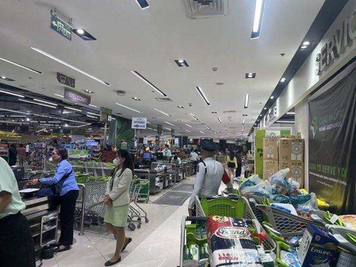

The Difference in Store Staffing Between Japan and the Philippines

I used to live in the Philippines.
After coming back to Japan, I noticed how few people work inside restaurants, convenience stores, and other shops.
Of course, Tokyo, Osaka, and Nagoya Stations can be so crowded that I wonder how this many people fit there.
But once I enter a store, Japan feels short of workers.
In Cebu, three or four people sometimes handled one checkout.
One scanned the items, one managed the payment, and one packed the bags.
Four or five people could be involved in one purchase.
In Japan, I rarely see two people working at one register.
One person usually handles everything, starting with the scanning.
The difference is even clearer in restaurants.
In Japan, I rarely see a worker who looks free, and it can be hard to catch someone just to order.
In the Philippines, workers are much easier to find.
They often look relaxed and cheerful, and many of them feel easy to talk to.